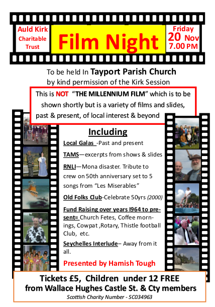

Past Events
Doors Open Day
This weekend Tayport’s Auld Kirk will be open on Sunday 4th September from 12.00-16.00 hours as part of Fife Council’s Doors Open Day in North East Fife. We will have a display of various historic artifacts as well as giving people a chance to see the building and learn more about our future plans.
Further information about the Doors Open Day can be found at www.fifedirect.org.uk/doorsopendays


